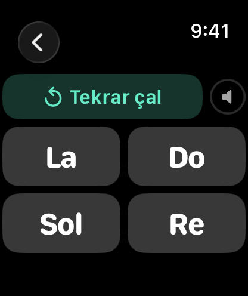
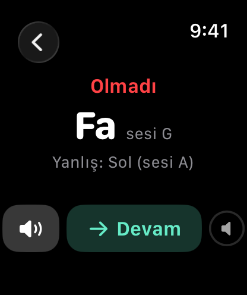
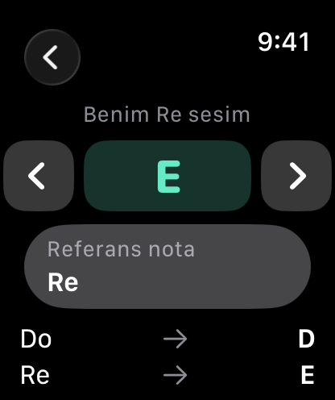
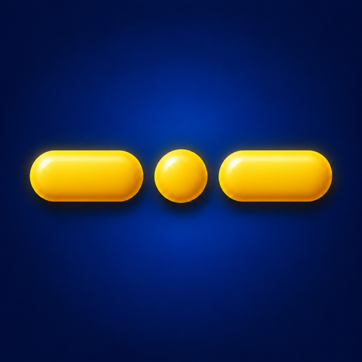
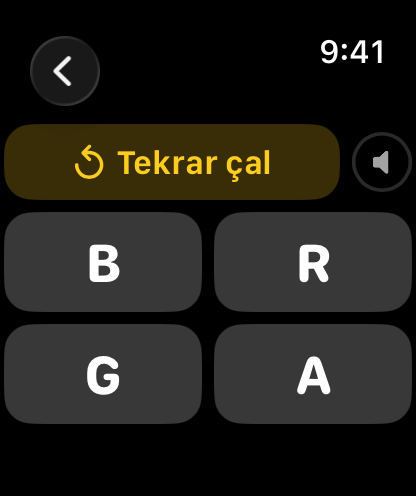
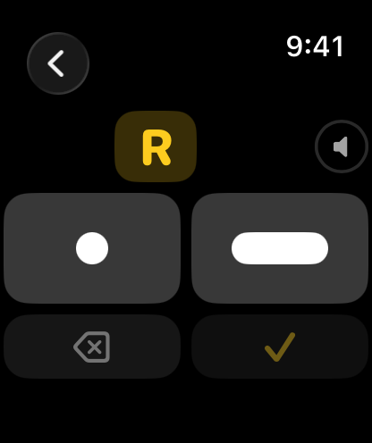
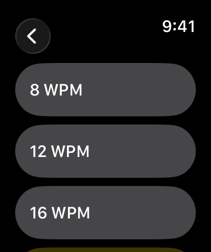

Kolunda Eğitici Oyunlar
Apple Watch için üç alıştırma uygulaması tek pakette. Doremi Hocası ile kulağınızı eğitin, Mors Hocası ile Mors alfabesini, Plaka ile 81 ilin plakasını öğrenin. Kısa sorular, her cevaptan sonra doğrusu, süre sınırı yok. Üçü de yalnızca Apple Watch’ta çalışır; iPhone gerekmez.
Üçü de watchOS 8 veya sonrasında çalışır.
İndir
Üç uygulamayı tek pakette birlikte indirin.

Doremi Hocası Kolunda
Bileğinizde kulak eğitimi. Çalan notayı dinleyip dört seçenek arasından doğru adı seçin.
- Nota adları Do Re Mi veya A B C.
- Yedi doğal notayla başlayın, isterseniz diyez ve bemolleri ekleyin.
- Benim sazım: Re dediğiniz telin hangi sesi verdiğini seçin, diğer nota adları da buna göre ayarlanır. Bağlama çalanlar için yapıldı, her transpoze çalgı için işe yarar.
- İstatistikler bugünkü ve toplam başarınızı hem genel hem nota setine göre gösterir.



Kullanım kılavuzu ve SSS → · App Store
Mors Hocası Kolunda

Uluslararası Mors alfabesinin A–Z harflerini iki yönde çalışın.
- Mors → Harf: Bir harfin kodunu dinleyin, dört seçenekten doğru harfi bulun.
- Harf → Mors: Ekrandaki harfin kodunu Nokta ve Çizgi tuşlarıyla yazın. Her dokunuşta sesini duyarsınız.
- Hız 8–25 WPM arasında. Düşük hızla başlayıp telsizde duyduğunuz hıza kadar çıkın.
- İstatistikler bugünkü ve toplam başarınızı gösterir.



Kullanım kılavuzu ve SSS → · App Store
Plaka App Kolunda
Türkiye’nin 81 ilinin plaka kodlarını ve haritadaki yerlerini, tüm ülke için ya da bölge bölge çalışın.
- Şehir → Plaka: Ekrandaki ilin plakasını iki haneyle yazın. İkinci hanede cevabınız kontrol edilir; 81’in üzerindeki sayılar yazılamaz.
- Plaka → Şehir: Ekrandaki plakanın ilini dört seçenek arasından bulun.
- Harita → Şehir: Haritada işaretli ili, komşu illerden oluşan dört seçenek arasından bulun.
- Bölge: Tüm Türkiye’yi ya da yedi bölgeden birini çalışın; harita bölgeye yakınlaşır.
- Yanlış cevapta yazdığınız plakanın hangi ile ait olduğunu da görürsünüz.
- 81 ilin her biri sorulmadan hiçbir il ikinci kez sorulmaz.


Kullanım kılavuzu ve SSS → · App Store
Üç uygulamada da
- Her sorudan sonra doğru cevap ve sizin cevabınız görünür.
- Süre sınırı yok.
- İstatistikler bugünkü ve toplam başarınızı gösterir.
- Doremi ve Mors: Cevap vermeden önce istediğiniz kadar tekrar dinleyin, cezası yok. Alıştırma sırasında Digital Crown’u çevirerek sesi ayarlayın. Bluetooth kulaklık da kullanılabilir.
- Yalnızca Apple Watch’ta çalışır. iPhone uygulaması yok, hesap yok, reklam yok, takip yok, veri toplama yok.
Destek
Uygulamalardan biriyle ilgili sorunuz mu var? Bize yazın. Her mesajı okuyoruz.
Gizlilik politikaları: Doremi Hocası · Mors Hocası · Plaka